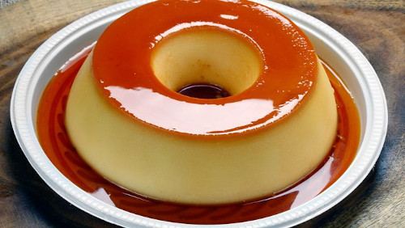

Pudim
Pudding aka Flan

Description
Medium difficulty recipe, known for its creamy texture.
Prep time: 60 minutes. Makes 8 slices (portions).
Ingredients
Cream
- 1 can of condensed milk
- 1 can of milk (use condensed milk can for measure)
- 3 eggs
Syrup
- 1 cup of sugar
- 1/2 cup of water
Steps
Cream
- Blend eggs well
- Add condensed milk and blend everything together
Syrup
- Melt sugar in a pan until brown, add water and let it thicken
- Pour syrup into the bottom and suirl it onto the sides of a Flan Mold adding the cream next.
- Bake it in the oven for 45 minutes at 350°F, with the round pan inside of a deeper 10.5x12.8 baking pan with water
- Gently stick a fork through the baked cream to check its consistency. If the fork comes back clean, the Pudim is done baking.
- Let it sit until cool and flip it into a round dish for storing in the fridge.
The original recipe can be found here.